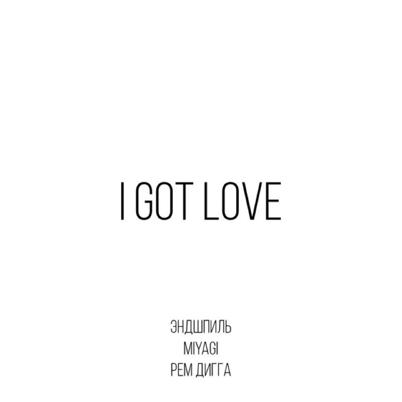

Artists
Our Roster
Pinkfong

The children's music powerhouse behind the most-watched video on the internet. Short, loud, unbelievably sticky.
- 1 Baby Shark 2:16
- 2 Wheels on the Bus 2:35
- 3 Five Little Monkeys 2:05
- 4 Monkey Banana 2:24
- 5 Shark Family 2:11
Adriano Celentano

Sixty years of Italian pop in one voice: rock and roll imported, rewritten and sung back louder.
- 1 Azzurro 3:41
- 2 L'emozione non ha voce 4:13
- 3 Il ragazzo della via Gluck 4:16
- 4 Susanna 4:26
- 5 Confessa 4:16
Asake

Amapiano log drums, fuji chants and street-Yoruba hooks. The loudest new voice out of Lagos.
-
1
 Sungba
2:47
Sungba
2:47
-
2
 Joha
2:35
Joha
2:35
-
3
 Jogodo
3:08
Jogodo
3:08
-
4
 Amapiano
3:22
Amapiano
3:22
-
5
Lonely At The Top
2:16
Miyagi and Andy Panda

Two rappers from Vladikavkaz, half sung and half spoken, built on dub basslines and long reverbs.
-
1
 Kosandra
3:18
Kosandra
3:18
-
2
 Utopia
3:00
Utopia
3:00
-
3
Minor
3:13
-
4
 Saloon
2:46
Saloon
2:46
-
5

I Got Love 4:04
Johnny Cash

The man in black. Three chords, the truth, and a baritone that outlasted every genre it was filed under.
- 1 Hurt 3:36
- 2 Ring of Fire 2:38
- 3 Highwayman 3:03
- 4 God's Gonna Cut You Down 2:38
- 5 Ghost Riders in the Sky 3:45